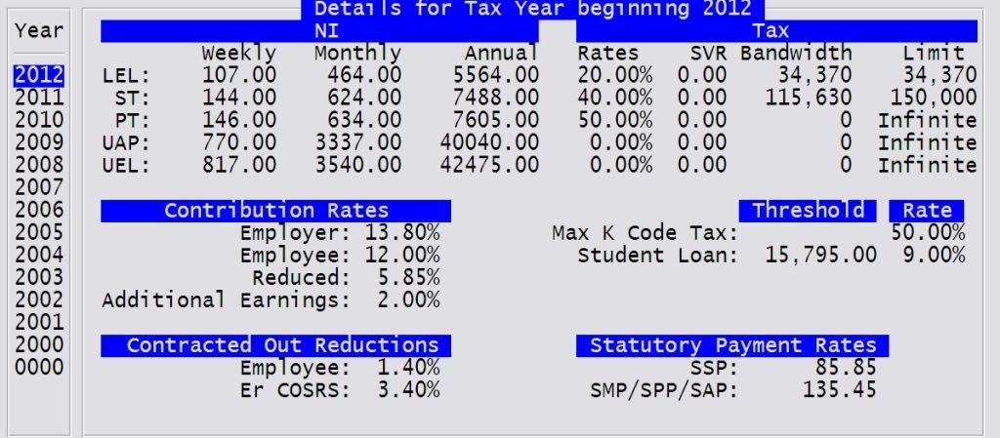

When the Year End Processing is run, it checks to see if there is an annual rates record for the new year. If not, it creates one and defaults the rates from the prior year.
The parameter TAXDELAY controls the date from which the new tax bands and rates should be applied. The default for this is the 6th of April, which would be entered as 06/04 in the parameter.
Note the details below are PRE BUDGET, so the tax bands may change for 2012.
